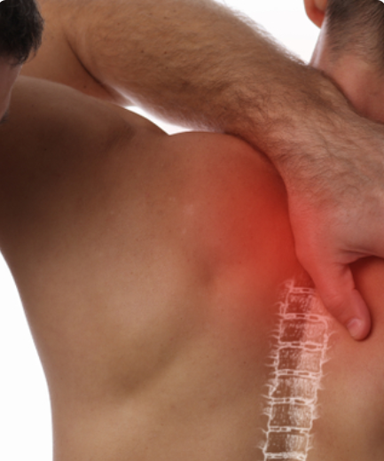
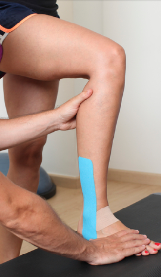
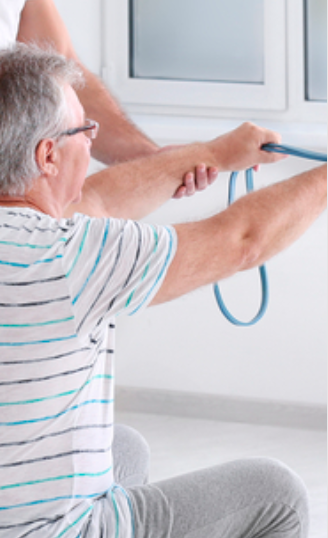

La mejor atención y un trato humano como ningún otro.
SERVICIOS
CLICK EN LA IMAGEN

CLICK EN LA IMAGEN

CLICK EN LA IMAGEN
CLICK EN LA IMAGEN

CLICK EN LA IMAGEN
CLICK EN LA IMAGEN
CLICK EN LA IMAGEN
CLICK EN LA IMAGEN
CLICK EN LA IMAGEN
PROMOCIONES
No importa qué tipo de fisioterapia necesites, sea especializada, geriátrica o infantil, en FisioIrigoin nos encargaremos de mandarte un terapeuta altamente calificado y a domicilio.
Nuestro servicio de terapia física y rehabilitación a domicilio tiene un costo extra, generado por el transporte del terapeuta. Además cabe mencionar que está sujeto a disponibilidad de horario. Llámanos para solicitar más información y los horarios disponibles.
Por cada 5 secciones la sexta es completamente GRATIS
FisioIrigoin es el centro de rehabilitación física con una fisioterapeuta capacita cerca de tí. Soy una profesional capacitada con experiencia y de gran calidad humana.
En Fisio Irigoin te ayudamos a prevenir y tratar lesiones deportivas
La fisioterapia deportiva es una subespecialidad que se encarga de atender las necesidades fisioterapeutas de personas que realizan actividad física constante, sea por salud, de forma amateur, practiquen un deporte profesionalmente o realicen actividades de alto rendimiento.
En nuestro centro de fisioterapia deportiva tenemos dos objetivos principales: brindar rehabilitación deportiva a los pacientes que hayan sufrido algún percance y trabajar en la prevención de lesiones físicas.
¿En qué consiste la prevención de lesiones deportivas?
Principalmente se trabaja en mejorar la condición del deportista y la fortaleza de sus músculos, evitando la sobrecarga y corrigiendo el mal gesto deportivo. La mayoría de las lesiones deportivas son causadas por una mala práctica del ejercicio: las personas no utilizan bien el equipo, no realizan un estiramiento adecuado, llevan a cabo sobreentrenamiento o cuentan con un plan de ejercicios inapropiado para su condición o disciplina.
El trabajo preventivo se realiza en gran medida con masajes especializados que ayudan a descargar tensión y tonificar la musculatura, según el momento en que se encuentre el deportista. La terapia será diferente si se realiza antes o después de la actividad física, pues los efectos y beneficios que se buscan también lo son.
Los principales beneficios de la terapia preventiva son los siguientes:
+ Mejora el rendimiento deportivo
+ Aumenta la capacidad muscular
+ Mejora la elasticidad
+ Disminuye el riesgo de sufrir una lesión
+ Beneficia el estado anímico y psicológico del atleta
¿En qué consiste la rehabilitación de lesiones deportivas?
El primer paso es realizar un diagnóstico médico completo, en el cual se determina el tipo de lesión y la gravedad de la misma. Posteriormente, dependiendo el caso y la condición del atleta, se comenzará con un tratamiento integral multidisciplinario para garantizar una recuperación exitosa.
Cuando un atleta está en recuperación, debe tener especial cuidado en no sobrepasar sus capacidades. Uno de los objetivos principales de la rehabilitación es adaptar el cuerpo del paciente al entrenamiento, esto se logra mediante una planificación de ejercicios enfocada en el aumento progresivo del esfuerzo requerido para llevar a cabo cada una de las actividades.
Ejercicios de estabilidad articular, estiramientos, la aplicación de kinesiotape en la lesión, fortalecimiento muscular y un entrenamiento adecuado que facilite la vuelta a la actividad son las claves de una rehabilitación exitosa.
Cabe mencionar que el deportista debe cooperar con el equipo de rehabilitación en todo momento. Una conducta adecuada y buena actitud ante el tratamiento son dos características que pueden acelerar (aún más) el proceso de recuperación.
Las lesiones que atiende la rehabilitación deportiva son las siguientes:
+ Esguince de tobillo
+ Lesión de ligamento cruzado y laterales (rodilla)
+ Meniscopatías
+ Tendinitis y tendinosis (talón de aquiles, manguito rotador, etc.)
+ Si el atleta se somete a un tratamiento de prevención constante, nunca tendrá la necesidad de pasar por un proceso de rehabilitación, además de mejorar su rendimiento físico y desempeño deportivo.
¿Buscas una AYUDA de fisioterapia deportiva?
En FisioIrigoin tenemos el compromiso de ayudarte a mejorar tu rendimiento, prevenir lesiones y brindarte un servicio de rehabilitación de primer nivel. ¡Contáctanos!
MOSTRAR MAS
Traumatología y Ortopédica
Recupera la fortaleza, facilidad de movimiento y alivio en tus articulaciones
En FisioIrigoin La fisioterapia traumatológica y ortopédica es un área especializada encargada de diagnosticar, evaluar y tratar lesiones de carácter músculo-esqueléticas. Este tipo de lesiones ocurren en tejidos blandos, músculos, huesos, nervios y articulaciones.
Los principales objetivos de la fisioterapia traumatológica son:
1.- Aliviar el dolor y reducir la inflamación
2.- Ayudar al paciente a recuperar el movimiento
3.- Que el paciente se reincorpore a sus actividades cotidianas
En FisioIrigoin ofrecemos todo tipo de rehabilitación sin importar la gravedad de la lesión. Brindamos atención para esguinces, fracturas, escoliosis, problemas de rodilla (meniscos y ligamento cruzado), prótesis de cadera entre muchas otras.
Las patologías que atendemos y las rehabilitaciones que ofrecemos son las siguientes:
+ Esguinces (principalmente de tobillo)
+ Rehabilitación de hombro (manguito rotador)
+ Rehabilitación después de cirugía de cadera (prótesis)
+ Rehabilitación para problemas de ciática.
+ Rehabilitación de columna (espalda baja, columna cervical, columna desviada y escoliosis)
+ Luxaciones
+ Fracturas
+ Contracturas
+ Tendinitis
¿Cómo se lleva a cabo la fisioterapia?
Dependiendo el estado y las necesidades del paciente, podremos recomendar varias de las siguientes acciones:
1.- Masajes especiales
2.- Ejercicios de movilización
3.- Aplicación de kinesiotape (vendaje neuromuscular)
4.- Crioterapia
5.- Ondas de choque
6.- Electroterapia
7.- Ejercicios de estiramiento específicos
8.- Ergonomía postural
9.- Propiocepción y ejercicios de equilibrio
10.- Potenciación muscular
Al finalizar el protocolo, el paciente podrá volver a sus actividades cotidianas, sin embargo, tendrá que tener en cuenta su patología y deberá estar bajo observación, realizando los ejercicios y acatando las recomendaciones para tener su articulación en forma y así evitar una recaída.
Es importante mencionar que la fisioterapia traumatológica y ortopédica es un área de especialidad médica, por lo tanto, los ejercicios y tratamientos de esta disciplina deben ser indicados por un profesional capacitado. Evita poner en riesgo tu salud e integridad, no realices ejercicios o sigas tratamientos recomendados por terceros.
Agenda una consulta con nosotros, tenemos la experiencia y tecnología que necesitas para terminar con tus problemas de rodilla, cadera, tobillo o cualquier otra articulación.
WhatsApp
Fisioterapia Pediátrica
Promovemos el desarrollo neurológico, traumatológico y cardio-respiratorio
Contrario a lo que suele creerse, la fisioterapia pediátrica no se refiere a la fisioterapia tradicional para niños; específicamente, la fisioterapia pediátrica (o infantil) se encarga de brindar tratamiento a recién nacidos, niños y adolescentes con alteraciones congénitas o deficiencias motoras, tratando de conseguir que el paciente pueda desarrollar el mayor funcionamiento posible.
Esta disciplina contempla la implementación de terapia física para niños con síndrome de down, parálisis cerebral, espina bífida, agenesias, escoliosis y secuelas de enfermedades agudas (meningitis, infecciones respiratorias, deformidades cardiacas).
Además, la fisioterapia respiratoria pediátrica rehabilita a niños afectados por enfermedades como asma, bronquitis, fibrosis, entre otros padecimientos que reducen la capacidad respiratoria del paciente.
Tratamiento de fisioterapia infantil
Para comenzar con un tratamiento de fisioterapia infantil, el paciente debe pasar por una serie de evaluaciones que midan los siguientes aspectos:
+ Equilibrio
+ Desarrollo motor
+ Fuerza
+ Coordinación
+ Posturas funcionales
+ Estado músculo-esquelético
+ Movilidad espontánea
Esto permitirá conocer a detalle el retraso psicomotor y las desviaciones de la estructura músculo-esquelética, lo que a su vez permitirá desarrollar un programa personalizado basado en diferentes estrategias terapéuticas.
Durante los primeros años de vida, el niño desarrolla una serie de habilidades que le permitirán interactuar con el futuro que le rodea; por esto la estimulación temprana es muy importante. Entre más pronto se someta a una fisioterapia profesional, más se podrá hacer para corregir los problemas que lo condicionan.
Los objetivos (a grandes rasgos) de un tratamiento de fisioterapia infantil, son los siguientes:
+ Mejorar la respuesta sensorial y cognitiva del niño
+ Estimular el sistema nervioso central
+Mejorar las habilidades motoras
+ Mejorar aspectos como el equilibrio, la coordinación, fuerza y resistencia
+ Ayudar al desarrollo
+ Además se le brinda orientación a los padres del niño con el objetivo de que el tratamiento sea continuo, aún cuando el niño está en casa.
En FisioIrigoincreemos que la rehabilitación adecuada, la compañía y el amor, ayudan a mejorar ampliamente la vida de todo niño, sin importar las dificultades. Visítanos y conoce las opciones para ayudar a tu ser querido. Acudimos a tu domicilio previa Cita WhatsApp
Geriátrica
Rehabilitación física para adultos mayores
La fisioterapia geriátrica es una disciplina específica de la fisioterapia que busca adaptar las técnicas y los modos de aplicación para implementarlo en la rehabilitación de personas de la tercera edad.
Con el tiempo, el cuerpo comienza a perder fortaleza y experimenta cambios en la musculatura y los huesos, mismos que pueden ocasionar problemas generales de postura, equilibrio y en las articulaciones. Afortunadamente, la terapia física y ocupacional para adultos mayores brinda la oportunidad de envejecer con calidad de vida.
¿Cuándo se recomienda la fisioterapia geriátrica?
La fisioterapia geriátrica es muy efectiva como complemento para tratar diversas patologías propias del envejecimiento, sin embargo, también puede emplearse para evitar la aparición o el desarrollo de éstas y mejorar la independencia del paciente.
Así mismo, es muy efectiva como terapia de rehabilitación postoperatoria o para pacientes que se han visto obligados a permanecer en cama por largos periodos. El fisioterapeuta geriátrico recomendará el protocolo si el paciente tiene alguna de las siguientes dificultades.
+ Demencia y alzheimer
+ Limitaciones de movilidad
+ Incontinencia (urinaria y fecal)
+ Enfermedades cardiacas y pulmonares
+ Parkinson
+ Derrame cerebral
+ Artritis y artrosis de rodilla y cadera (principalmente)
+ Reemplazos articulares
+ Ha sufrido una fractura de cadera
Los beneficios de toda fisioterapia geriátrica son los siguientes:
+ Disminución del dolor general
+ Mejora el equilibrio
+ Mejora la sensibilidad y funcionalidad articular
+ Aumenta la fuerza muscular
+ Ayuda a recuperar la flexibilidad
+ Produce efectos positivos en el estado anímico
Como expertos en fisioterapia, nuestra misión y compromiso es garantizar la autonomía del paciente y la reincorporación de estos a sus actividades cotidianas. Visítanos para agendar una consulta de valoración.
WhatsApp
Cardio-respiratoria
Terapia cardiaca y pulmonar diseñada específicamente para mejorar tu condición
También conocida como terapia pulmonar o cardiaca, la especialidad de fisioterapia cardio-respiratoria se ocupa de diagnosticar, tratar y prevenir enfermedades del corazón y pulmón, especialmente aquellas que causan dificultad para respirar, sensación de falta de aire y tos recurrente.
No importa la edad del paciente, la fisioterapia cardiaca y respiratoria puede mejorar la condición y otorgar beneficios a bebés, niños, adultos y personas de la tercera edad.
Las enfermedades que atiende esta disciplina son las siguientes:
+ Asma
+ Enfermedad pulmonar obstructiva crónica (EPOC)
+ Bronquitis
+ Enfermedades respiratorias
+ Enfisema
+ Insuficiencia cardiaca
+ Enfermedad coronaria
+ Lesiones o cirugía cardiopulmonar
+ Fibrosis quística
Después de un diagnóstico donde se evalúa la condición y el estado general del paciente,
el fisioterapeuta podrá recomendar alguna de las siguientes acciones:
+ Ejercicios de respiración profunda
+ Técnicas para mejorar la tos y la respiración
+ Ejercicios de respiración y circulación
+ Mejoría de la movilidad
+ Percusiones y vibraciones
Acude a nuestra clínica de terapia respiratoria, donde ofrecemos rehabilitación pediátrica (niños, adolescentes y bebés), geriátrica y para adultos de todas las edades. En Symmetría te ayudamos a mejorar tu calidad de vida, visítanos para un consulta de valoración dejando tus datos en la sección correspondiente.
WhatsApp
Otras Terapias
Terapia ocupacional y neurológica para pacientes de todas las edades
Los protocolos de terapia neurológica tienen como principal objetivo ayudar a la rehabilitación de pacientes con daño cerebral mediante ejercicios que estimulan los sentidos y el sistema nervioso.
Los resultados que se persiguen con una terapia neurológica son los siguientes:
+ Estimular la musculatura afectada
+ Reducir la contracción de los músculos
+ Mejorar el movimiento de las articulaciones
+ Disminuir el dolor
+ Aumentar la sensibilidad
+ Mejorar la capacidad de marcha
Mediante la implementación de ejercicios personalizados guiados por un terapeuta capacitado en fisioterapia neurológica, el paciente es sometido a un protocolo diseñado específicamente para estimular las sensaciones motoras necesarias para su progreso, ayudándolo a percibirse mejor así mismo y a los aspectos que comprenden su entorno.
La terapia ocupacional, por otro lado, se basa en conseguir la máxima funcionalidad de una persona con algún tipo de limitación física, cognitiva y/o conductual, mediante actividades aplicadas con fines terapéuticos, previniendo así el desarrollo de patologías y favoreciendo la restauración de ciertas funciones neuronales.
Este tipo de terapia ayuda a los pacientes a conseguir una mayor independencia, específicamente en el caso de los adultos; si se trata de un paciente infantil, la terapia ocupacional lo ayudará a jugar y aprender con mayor facilidad, dos tareas cruciales para el desarrollo de un niño.
Otra de las terapias que ofrecemos es la de estimulación temprana. Consiste en una serie de juegos y ejercicios que estimulan la capacidad cerebral del niño, aplicando la repetición sistemática para reforzar ciertas áreas específicas del cerebro.
Se trata de un método basado en la creatividad y la imaginación, buscando despertar el interés del niño mediante el juego y la diversión, ayudándolo a adaptarse al medio y avanzar en la sociedad humana.
En FisioIrigoin somos expertos en fisioterapia y rehabilitación. Ofrecemos tratamientos para bebés, niños, adulto y personas de la tercera edad, además de brindar servicio a domicilio y desarrollar tratamientos personalizados. Visítanos
Terapia física, de rehabilitación y ocupacional a domicilio
En FisioIrigoin te ofrecemos servicio de fisioterapia y rehabilitación hasta la puerta de tu hogar. Somos uno de los pocos centros de fisioterapia en ofrecer este servicio en la colonia Roma.
No importa qué tipo de fisioterapia necesites, sea especializada, geriátrica o infantil, nosotros nos encargaremos de mandarte un terapeuta altamente calificado y a domicilio.
Nuestro servicio de terapia física y rehabilitación a domicilio tiene un costo extra, generado por el transporte del terapeuta. Además cabe mencionar que está sujeto a disponibilidad de horario. Llámanos para solicitar más información y los horarios disponibles.